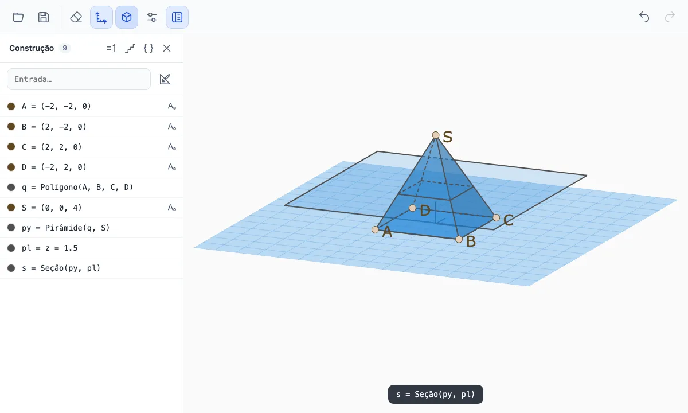

O 3D

Passar ao 3D
- Uma figura nova é plana. Visualização 3D inclina a câmera: o plano da figura vira o piso z = 0, o sistema de coordenadas um triedro. Um segundo toque volta ao plano, com o sistema de coordenadas anterior.
-
A volta ao plano é recusada enquanto um objeto sair do plano
z = 0; a indicação o nomeia. Inversamente, uma
figura plana recusa qualquer objeto do espaço (
A = (1, 2, 3), esfera…). - Cada passagem é um passo de desfazer.
- As figuras 3D do DGPad, com pontos livres no plano da tela, não têm esse botão.
Vista
- Girar: botão direito, ou um dedo num lugar vazio. Mover: botão esquerdo num lugar vazio. Zoom: roda do mouse.
- P: perspectiva ou projeção paralela; S: piso. Os mesmos ajustes na aba Figura.
- As partes ocultas (arestas, círculos, retas sob o piso ou atrás de uma face) ficam tracejadas.
Construir
-
Um clique num lugar vazio cria um ponto sobre o piso; pelo
teclado,
S = (0, 0, 4). - O menu ganha as famílias Planos e Sólidos e dois círculos; o anel de um ponto propõe a esfera.
-
Toda ferramenta que espera um plano aceita o
piso: um plano
z = 0oculto é criado e depois reutilizado. -
As fórmulas leem as três coordenadas:
d(A, B)é a distância no espaço.
| Objeto | Comando |
|---|---|
| Plano |
Plano(A, B, C),
Plano(A, d),
PlanoParalelo(A, p),
PlanoOrtogonal(A, d),
p = x + y + z = 3
|
| Perpendicular a um plano | Perpendicular(A, p) |
| Esfera |
Esfera(O, A),
Esfera(O, r)
|
| Círculos |
Círculo(d, P) de eixo d;
Círculo(O, r, d) ortogonal à reta d
ou paralelo ao plano d
|
| Sólidos |
Cilindro(A, B, r),
Cone(A, B, r),
Cubo(A, B, C),
Prisma(p, P),
Pirâmide(p, S)
|
| Seção |
Seção(s, p): círculo, cônica ou
polígono
|
| Planificação |
Planificação(c, f), f de 0
(fechada) a 1 (plana)
|
| Interseções |
Interseção(d, p) ponto,
Interseção(p, q) reta,
Interseção(s, t) círculo de duas
esferas
|
| Vértices | Vértice(c, k), k a partir de 1 |
Sólidos
- Um sólido é um só objeto: ele desenha faces e arestas (tracejadas atrás) e oculta o que está atrás dele. É selecionado dentro do seu contorno.
-
Cubo em dois cliques: dois pontos de um
mesmo plano ou polígono dão
Cubo(A, B, p, ±1), do lado voltado para a câmera; dois pontos da mesma altura dãoCubo(A, B, 1), acima (−1: abaixo). Senão a ferramenta espera um terceiro ponto. O cubo fica indefinido se [AB] deixar de ser paralelo ao plano. - A ferramenta Seção aceita o sólido e o plano em qualquer ordem.
-
Um controle deslizante como segundo argumento de
Planificaçãoanima a abertura:f = ControleDeslizante(0, 1, 0),n = Planificação(c, f).